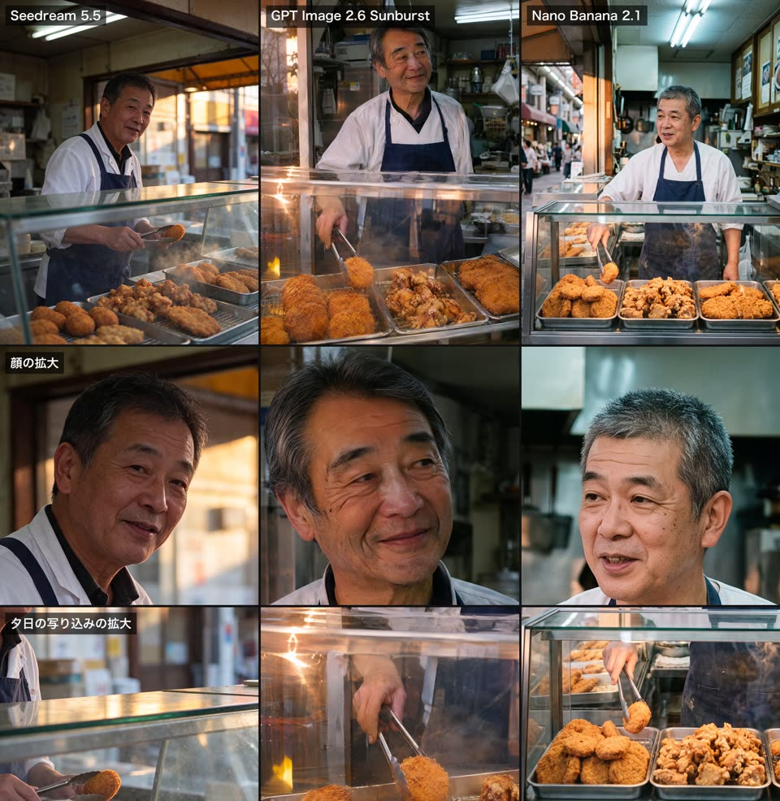

Seedream 5.5 vs GPT Image 2.6 Sunburst vs Nano Banana 2.1: a Japanese deli shopkeeper at dusk behind a glass case of croquettes (same prompt, one shot each)

A launch-day realism test of the new Seedream 5.5, with face and reflection crops. The Japanese prompt is a realism checklist: a 35mm lens at eye level, and a shopkeeper in his early 60s lifting one croquette with tongs and "looking slightly away from the camera with a relaxed half smile". Two kinds of light are mixed (blue-white fluorescent inside, orange sunset from the street). The texture rules call for real skin with natural, restrained wrinkles, no shine and no blown highlights, reflections in the case glass, crunchy fried coating with a little steam, and "leave the everyday clutter of a working shop", with no text or logos. The creator's verdict was that Seedream 5.5 rendered the most natural wrinkles and the sunset reflection on the glass.
Prompt
実写の写真。自然なスナップ写真。35mmレンズ、目の高さから撮る。夕方、日本の商店街にある家族経営の小さな惣菜屋の店先。60代前半の日本人男性の店主が、ガラスのショーケースの奥に立っている。ケースの中には、金属のトレイに並んだコロッケ・唐揚げ・とんかつ。店主は白い調理着に紺のエプロン。トングでコロッケを1つ持ち上げ、カメラから少し外れた所を見て、力の抜けた半分の笑顔。光は2種類が混ざる。店の中は青白い蛍光灯、通り側からはオレンジ色の夕日。肌は本物の質感で、しわは控えめに自然に。テカりなし、白飛びなし。ショーケースのガラスに映り込みがある。揚げ物の衣はザクザクした質感が見え、湯気が少し立つ。背景は少しぼかす。営業中の店らしい、日常の雑然さを残す。文字・ロゴは入れない。
Our Seedance 2.5 adaptation
[ADAPTED for Seedance 2.5 by Grok Bot; not the creator's prompt. Follows the official BytePlus Seedance 2.5 prompt guide and its official sd25-pe prompt-optimizer skill: parameters only on the API line (not in the prompt body), subject + action + scene, then visuals, camera (move, subject, start, direction, arrival) and sound; only the source's own exclusions are kept.] API: duration 6, ratio 3:4, resolution 1080p, generate_audio true. 【Subject】A Japanese shopkeeper in his early sixties in a white cook's coat and navy apron, standing behind the glass case of a small family-run delicatessen in a shopping arcade; inside the case, metal trays of croquettes, karaage and tonkatsu. 【Action】He lifts one croquette with tongs, glances just off camera with a relaxed half smile, and a little steam rises from the fried food. 【Camera】Eye level with a 35 mm look, handheld snapshot framing, background slightly soft; a small reframe as the tongs rise. 【Visuals】Two lights mixed: blue-white fluorescent inside the shop, orange sunset from the street side; reflections on the case glass; real skin texture with natural, restrained wrinkles; no shine, no blown highlights; crunchy coating texture; the everyday clutter of a working shop. No text or logos. 【Sound】Arcade bustle, a fryer crackling, tongs clicking.
Tags: shopkeeper portrait, older adult, 35mm eye level, mixed fluorescent + sunset, glass reflections, fried food texture, no shine, model comparison, Seedream 5.5, Japanese prompt